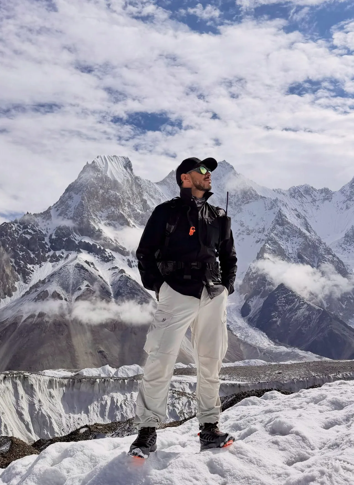
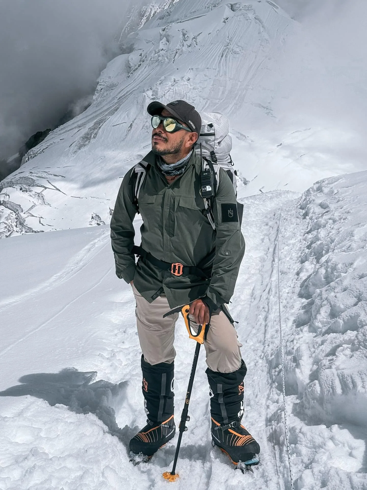

1. Executive Summary: Who Is 'Green Boots' on Mount Everest?
Among the more than 300 climbers who have lost their lives on Mount Everest, none has captured public consciousness, sorrow, and controversy quite like 'Green Boots'.
Between May 1996 and May 2014, mountaineers attempting the summit via the northern Tibetan route encountered a body lying curled on its side inside a natural limestone overhang at 8,500 meters (27,887 feet). The figure was clad in red and blue windproof down gear, but it was the pair of fluorescent green, neon-accented Koflach Arctic Expedition plastic mountaineering boots that gave the body its haunting moniker.
Because the overhang was the only sheltered hollow along the exposed limestone ridge leading to the First Step, climbers frequently ducked into the alcove to catch their breath, change oxygen bottles, or wait for ropes to clear—sitting directly beside the frozen body. Over time, 'Green Boots Cave' evolved into a grim, morbid waypoint: climbers would radio Base Camp saying, 'I have reached Green Boots, continuing to the Second Step.'
2. The Tragic May 10, 1996 Storm & The Indo-Tibetan Border Police (ITBP)

The tragic story of Green Boots began during the deadliest single storm in modern mountaineering history: the 1996 Mount Everest Disaster, famously chronicled in Jon Krakauer's bestseller Into Thin Air.
While international media focused predominantly on the tragedy engulfing Rob Hall's Adventure Consultants and Scott Fischer's Mountain Madness teams on the southern Nepalese side, an equally devastating drama was unfolding simultaneously on the northern Tibetan side:
- The Expedition: The Indo-Tibetan Border Police (ITBP) launched their first major attempt to put an Indian team on the summit via the North Col route under the command of Mohinder Singh.
- The Summit Push: On the morning of May 10, a six-man assault team departed Camp VI at 8,300m. Because of deep snow and bitter cold, three members turned back. Three men pressed forward: Subedar Tsewang Samanla, Lance Naik Dorje Morup, and Head Constable Tsewang Paljor.
- The Fateful Radio Call: At approximately 15:35 Nepal time (3:35 PM), the summit team radioed down to Base Camp, reporting that they had reached the summit and planted the Indian tricolor flag. (Subsequent photographic analysis suggested they may have mistaken the Second Step or a false summit ridge for the true summit in blinding whiteout).
- The Descent Into Hell: By 16:00, the catastrophic superstorm struck. Temperatures plummeted below -40°C with wind speeds exceeding 120 km/h. Running out of supplemental oxygen and completely blinded by horizontal snow, the three men fought to descend the knife-edge ridge. None of them made it back to Camp VI.
3. The Identity Debate: Tsewang Paljor or Dorje Morup?

For years, mountaineers and journalists debated which of the three fallen ITBP officers was resting in the limestone cave:
| Officer Name | Age / Role | Clothing & Gear Record | Historians' Consensus |
|---|---|---|---|
| Tsewang Paljor | 28 years old; Head Constable; farm boy from Ladakh | Issued green Koflach Arctic boots; red fleece; blue windpants | Universally Accepted as 'Green Boots' |
| Dorje Morup | 47 years old; Lance Naik; veteran border mountaineer | Reported moving slowly between First and Second Steps | Believed to have died higher on the ridge or fallen into the snow gullies |
| Tsewang Samanla | 38 years old; Subedar; team leader on the ridge | Last seen near the Second Step attending to teammates | Remains were never positively identified; believed swept down North Face |
In 2011, investigative journalist Rachel Nuwer visited Paljor's surviving family in Sakti, Ladakh. His mother, Tsering Angmo, confirmed that her 28-year-old son had been issued the bright green Koflach double boots. She tearfully recounted that Paljor had concealed his participation in the Everest summit team because he knew she would forbid him from risking his life.
4. The Limestone Cave at 8,500m: Why Climbers Must Step Over Bodies

Non-climbers often react with horror upon learning that mountaineers walked past a human corpse for nearly twenty years. Why didn't someone bury him? Why was he not moved?
The answer lies in the terrifying reality of the Everest North Ridge topography:
The Single-File Bottleneck
Above 8,400 meters, the Northeast Ridge narrows to an exposed shelf of loose yellow limestone flagstones bounded on the left by the sheer 3,000-meter drop of the Kangshung Face. Climbers are clipped to a single fixed rope. There is literally no room to step aside or walk around obstacles without stepping directly past the cave opening.
Extreme Physical Exhaustion
At 8,500 meters, taking three steps causes your heart to hammer at 160 beats per minute. Climbers are operating on 10% reserves, gasping through silicone masks, hands numb, brains clouded by hypoxia. Merely sitting down to drink water requires immense willpower. Moving a frozen human being in that state is physically impossible for an individual climber.
5. The Science of the Death Zone: Why Recovery Above 8,000m Is Nearly Impossible

The term 'Death Zone' is not a dramatic metaphor; it is a clinical medical reality coined by Swiss doctor Edouard Wyss-Dunant in 1952.
Above 8,000 meters (26,247 feet):
- Cellular Starvation: The barometric pressure drops to approximately 350 hectopascals (one-third of sea level). The pressure gradient in the lungs is insufficient to transfer enough oxygen across the alveolar membrane into red blood cells. The human body is literally dying by the hour.
- Hypothermic Deep Freeze: Ambient air temperatures hover between -30°C and -50°C. Frozen corpses do not decompose; they become mummified by dry, desiccant winds and freeze solid into the bedrock.
- The Physics of Frozen Weight: A human body weighing 75 kg (165 lbs) absorbs snow and blue ice, increasing its effective weight to over 100 to 120 kg (220 to 260 lbs). It becomes as unyielding and cumbersome as a block of solid granite.
Mountaineering logistics companies charge between $70,000 and $100,000+ USD to organize an emergency body recovery expedition in the Death Zone. The operation requires 6 to 8 elite Sherpa mountaineers breathing maximum oxygen, chipping away blue ice with axes, and carrying the corpse down vertical ladders and icy drops. Multiple Sherpas have lost their own lives attempting to retrieve bodies for grieving families.
6. The 2006 David Sharp Tragedy: The Ethical Dilemma in Green Boots' Cave

In May 2006, Green Boots' Cave became the focal point of the most intense ethical firestorm in mountaineering history: The David Sharp Tragedy.
David Sharp, an experienced 34-year-old British solo mountaineer, attempted to summit Everest without hiring a Sherpa guide and carrying minimal supplemental oxygen:
- The Fatal Bivouac: On his descent on the evening of May 14, 2006, Sharp ran out of oxygen and took shelter inside Green Boots' Cave, just feet away from Paljor's body. He huddled in his down suit, suffering from severe hypothermia and frostbitten limbs.
- The Passing Climbers: Over the following morning, more than 40 mountaineers passed David Sharp as they pushed toward the summit. Many mistook him for the Green Boots corpse or assumed he was merely resting.
- The Rescue Attempt: On their descent hours later, several climbers, including a team guided by Russell Brice, attempted to assist Sharp. They administered oxygen and tried to get him onto his feet, but he was completely immobilized and unable to stand. He could only murmur, 'My name is David Sharp, I'm with Asian Trekking, and I just want to sleep.' He passed away in the cave shortly thereafter.
Following Sharp's death, Sir Edmund Hillary publicly condemned commercial climbing ethics: 'I think the whole attitude towards climbing Mount Everest has become rather horrifying. People just want to get to the top. They don't give a damn for anybody else who may be in distress, and it doesn't impress me at all that they leave a man lying under a rock to die.'
7. Other Famous Everest Landmarks: 'Sleeping Beauty' & 'Rainbow Valley'

Green Boots is not the only permanent fixture of Everest lore. Over two hundred mountaineers remain preserved on the peak:
| Name / Moniker | Year & Route | Altitude & Location | Tragic Story & Current Status |
|---|---|---|---|
| 'Green Boots' (Tsewang Paljor) | 1996 (North Ridge) | 8,500m (First Step Cave) | Indian ITBP officer; served as trail marker for 18 years; repositioned in 2017 |
| 'Sleeping Beauty' (Francys Arsentiev) | 1998 (North Ridge) | 8,600m (First Step Ridge) | First American woman to summit without oxygen; died on descent; buried under snow by Ian Woodall in 2007 |
| Hannelore Schmatz | 1979 (South Col) | 8,300m (Geneva Spur) | First German woman to summit; sat resting against backpack and froze; winds eventually pushed body over Kangshung Face |
| George Mallory | 1924 (North Face) | 8,155m (Below Yellow Band) | Lost in 1924 mystery; body discovered bleached white in 1999 by Conrad Anker; buried with stone cairn |
| 'Rainbow Valley' | Various Years (South Col) | 8,200m – 8,400m | Gully below South Col named for bright red, blue, and yellow down suits of fallen climbers discarded or fallen over cliff edges |
8. The 2014 Disappearance & Where Is Green Boots Today?
In May 2014, mountaineers reaching the 8,500-meter alcove were stunned to discover that Green Boots was no longer visible.
Rumors immediately swept the global mountaineering community: Had Chinese authorities secretly recovered the body? Had a team carried him down? Or had heavy winter snow pack buried him?
In 2017, investigative reports and climber testimonies clarified what really occurred:
- The Chinese Clean-Up Initiative: The Chinese Tibet Mountaineering Association (CTMA) initiated high-altitude environmental and dignity restoration campaigns across the northern route.
- Repositioning for Dignity: Rather than risking human lives attempting to transport the 100kg frozen corpse down 2,000 meters of vertical rock cliffs, an elite team of Tibetan mountaineering guides moved the body out of the cave overhang.
- Burial in Stone: The body was respectfully pushed over a secluded ridge drop or buried under a heavy cairn of grey and yellow limestone boulders, shielding the fallen officer from the curious gaze of passing summit-seekers and returning solemn peace to his final resting place.
9. Sacred Mountain: The Sherpa & Tibetan Buddhist Spiritual Perspective

To Western climbers, Everest is an athletic arena and a geographic conquest. To the indigenous Sherpa and Tibetan people, the mountain is Chomolungma—the divine abode of Miyolangsangma, the goddess of wealth, nourishment, and compassion.
From the Buddhist perspective:
- Spiritual Pollution (Drip): Unburied corpses left rotting on the sacred goddess are viewed as a source of severe spiritual disharmony. It offends the mountain gods, bringing bad weather, sickness, and rockfalls.
- The Puja Ceremony: Before any climber steps foot onto the Khumbu Icefall or North Col, Buddhist Lamas perform an elaborate 3-hour Puja ceremony at Base Camp, seeking forgiveness for stepping on the goddess with sharp crampons and praying for the safe passage of all climbers.
- Soul Transmigration: In Tibetan Buddhism, the physical corpse is merely an empty vessel after consciousness (nam-she) departs. However, ensuring a peaceful transition requires that remains be treated with profound solemnity rather than treated as a tourist novelty.
10. Sagarmatha Clean-Up Campaigns: The Herculean Task of Body Retrieval
In recent years, both the Nepal Government (via the Nepal Army Mountain Clean-up Campaign) and the Chinese CTMA have made monumental efforts to clean Everest of historic debris and retrieve human remains:
| Operation | Tons of Waste Removed | Bodies Recovered | Challenges & Techniques |
|---|---|---|---|
| Nepal Army Clean-Up (Annual) | 35+ Metric Tons of trash | 10+ Bodies from Camp II & South Col | Using gas saws to cut ice; heavy sledges; oxygen-assisted helicopter longline at Camp II |
| CTMA North Side Operations | 20+ Metric Tons of trash | Multiple bodies relocated or buried | Strict permit quotas; removal of historic abandoned oxygen cylinders from high camps |
11. Mountaineering Safety Reforms: Oxygen Systems & Mandatory Sherpa Ratios
The tragedy of Green Boots and the 1996 disaster catalyzed profound technical and regulatory revolutions in Himalayan mountaineering:
- High-Flow Oxygen Regulators: In 1996, climbers used crude Russian Poisk regulators that frequently froze at -30°C. Modern systems (such as Summit Oxygen) deliver reliable flow rates of up to 4 to 6 liters per minute, drastically preventing cerebral hypoxia.
- Mandatory 1:1 Sherpa Guide Ratio: Commercial operators now strictly enforce a minimum of one personal climbing Sherpa guide per foreign client, eliminating solo climbers dying unnoticed in high caves.
- Satellite GPS & Radio Tracking: Every climber is now tracked via satellite beacons, and radios are monitored continuously at Base Camp.
- Strict 2:00 PM Turnaround Rule: Professional agencies enforce an unbending rule: if you have not reached the summit by 2:00 PM (or earlier), you are turned around immediately, regardless of how close you are to the top.
12. The Psychological Reality: Confronting Mortality in the High Himalayas
What goes through a mountaineer's mind when walking past a preserved body on the summit push?
Psychologists who study extreme survival describe a state of 'narrowed sensory focus' and cognitive defense:
Tunnel Vision Survival Mode
When your brain is starved of oxygen, executive function shuts down. Climbers report entering a trance-like tunnel vision where their entire universe consists of the 6 inches of rope in front of them and their next breath. Seeing a body registers not with panic, but with eerie, detached emotional numbness.
The Post-Trek Reality Check
The true psychological weight hits climbers only after returning to Base Camp and Kathmandu. Seeing a peer who walked the same trail frozen in time is a traumatic encounter with one's own mortality that stays with mountaineers for the rest of their lives.
13. Enduring Lessons: Respecting the Mountain's Unforgiving Power
The story of Green Boots is not a ghost tale; it is an enduring human lesson written in stone and ice:
- Lesson 1: The Mountain Always Has the Final Word. No amount of physical conditioning, wealth, or ambition can overcome a hurricane-force blizzard in the Death Zone. Humility is your greatest survival asset.
- Lesson 2: Summiting Is Only the Halfway Mark. Over 80% of fatalities on Everest occur on the descent, when glycogen is depleted, oxygen bottles run dry, and darkness falls.
- Lesson 3: The Primacy of Human Life Over Trophies. No medal, summit selfie, or certificate of achievement is worth abandoning a fellow human being or dying for a brass plaque.
- Lesson 4: Honor the Fallen. Tsewang Paljor was a loving son, a courageous border police officer, and a proud mountaineer. May his memory continue to teach future generations of adventurers the sacred value of caution, humility, and respect.
14. Frequently Asked Questions: Green Boots on Mount Everest
Who was Green Boots on Mount Everest?
Green Boots is the name given to the unidentified corpse of a climber that rested at 8,500m on Mount Everest's Northeast Ridge from 1996 to 2014. He is widely believed to be Tsewang Paljor, a 28-year-old Head Constable with the Indo-Tibetan Border Police (ITBP) from Ladakh, India, who perished in the May 10, 1996 disaster.
Where was Green Boots located on the mountain?
He was located in a natural limestone rock cave / overhang at approximately 8,500 meters (27,887 feet) on the Northeast Ridge in Tibet, just below the First Step on the standard North Col route.
Is Green Boots still on Mount Everest today?
The remains are no longer in the cave on the main climbing path. In 2014 and 2017, Tibetan mountain guides and clean-up expeditions moved and respectfully covered the body with stones and snow out of direct view, restoring dignity to his resting place.
Why was Green Boots left on the mountain for so long?
In the Death Zone above 8,000 meters, human survival is precarious. A frozen human body can weigh over 100 kg (220 lbs) and is frozen solid to the rock. Transporting a body down the vertical rock bands and ladders of the North Ridge requires 6 to 8 elite Sherpas risking their own lives and costs between $70,000 and $100,000 USD.
Why did he have green boots?
He was wearing bright green double-plastic mountaineering boots manufactured by Koflach (popular Arctic expedition boots in the 1990s). The fluorescent green color stood out dramatically against the gray limestone rock and white snow.
What happened to David Sharp in Green Boots' cave?
In May 2006, British solo climber David Sharp ran out of oxygen and sat freezing inside Green Boots' cave. Over 40 climbers passed him on their way to the summit. Although several attempted assistance on descent, Sharp could not be moved and died of severe hypothermia, sparking global ethical outrage.
How many bodies are currently on Mount Everest?
Over 330 people have died attempting to climb Mount Everest since records began in 1922. It is estimated that more than 200 bodies remain on the mountain, preserved by the permanent sub-zero cold in crevasses, high gullies, and along the climbing ridges.
Do trekkers on the Everest Base Camp Trek see dead bodies?
No, absolutely not. The standard Everest Base Camp Trek takes place entirely below 5,364 meters in Nepal, far below the Death Zone (8,000m+). Trekkers will never see corpses on the trail. You will only see the beautiful memorial chortens at Thokla Pass dedicated to fallen climbers.

Ready to Experience the Himalayas?
Whether you are preparing for high-altitude trekking, cultural circuits, or alpine summit expeditions, start planning a bespoke journey tailored to your fitness, travel season, and style.